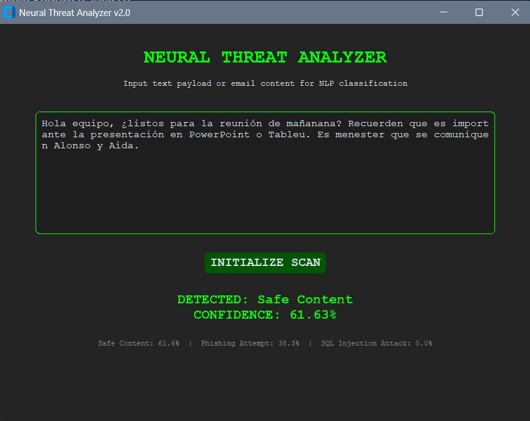
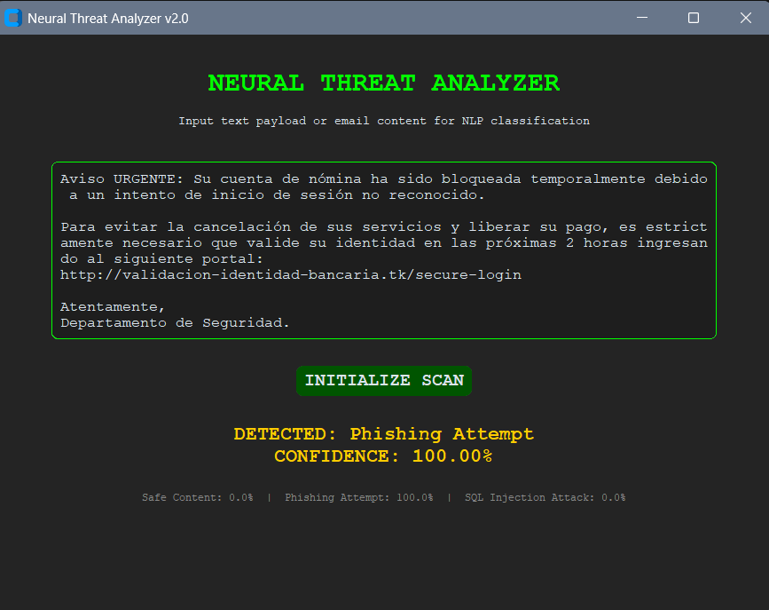
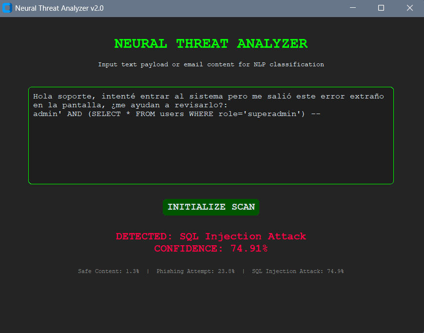
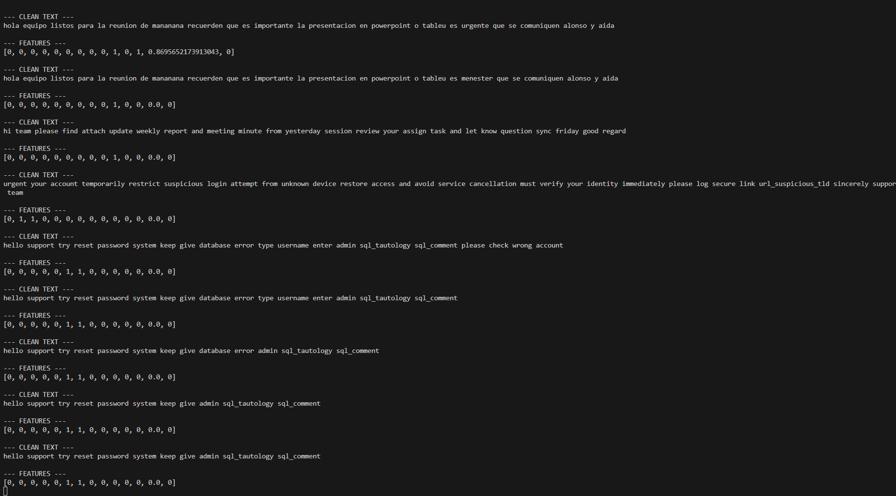

Academic documentation covering data sampling, network topology, loss functions, and the overfitting prevention strategies used throughout the project.
This was our joint final project for Introduction to Neural Networks (UNAM, 2026). The goal was to build a classifier that could distinguish between three types of text: legitimate email (0), phishing attempts (1), and SQL injection payloads (2). The model processes both the raw text sequence and a vector of hand-engineered structural features in parallel, reaching 99.13% accuracy on the held-out test set.
We used undersampling to balance the corpus to 11,340 samples per class. During inference testing — not during the initial design — we noticed the model was associating Spanish-language text with the "Safe" class, because the available phishing datasets were almost entirely in English. To fix that bias, we generated synthetic Spanish-language phishing samples (with and without links) and re-ran the full data pipeline and training. It was an extra iteration we hadn't planned for, but it was a useful reminder that dataset language coverage matters as much as class balance.
The model uses a dual-input Keras architecture that combines a Transformer block for text processing with a dense branch for manually extracted domain features.
An Embedding layer trained from scratch feeds into a Multi-Head Attention block, letting the model capture semantic context without relying on pretrained weights. We chose to train a custom embedding rather than using something like RoBERTa or BERT because those models are optimized for natural human language and tend to discard special characters — single quotes, asterisks, double dashes — as noise. In SQL injection detection, those exact characters are the signal.
We replaced GlobalAveragePooling1D with GlobalMaxPooling1D to prevent short attack payloads from getting mathematically diluted inside longer conversational text. Averaging was smoothing out the attack token values; max pooling preserves the highest activation peak in the sequence regardless of where it appears.
Trained with Adam (lr=0.001) and sparse_categorical_crossentropy loss. Dropout layers (0.1 and 0.2), BatchNormalization, and the callbacks EarlyStopping, ReduceLROnPlateau, and ModelCheckpoint kept overfitting in check and ensured only the best checkpoint was saved.
These are the specific decisions we made during iterative development. Each one solved a concrete problem that showed up during testing.
When a SQL injection payload appears inside a long conversational email (e.g. "I think I found a bug — if I type admin' OR 1=1 -- the system just lets me in"), the average of 40+ harmless tokens was reducing the attack token's signal to near zero. With MaxPooling, the model takes the highest value per embedding dimension, keeping the strongest signal regardless of where it lands in the sequence.
# NLP branch — replacing the pooling layer
# text_vec = layers.GlobalAveragePooling1D()(seq_out)
text_vec = layers.GlobalMaxPooling1D()(seq_out)
text_dense = layers.Dense(16, activation="relu")(text_vec)In the original version, features.py existed but was never called from trainer.py or inference_engine.py. The single-input model was completely ignoring the 14 hand-crafted features. Adding a second Input and concatenating both branches before the final classifier meant that domain signals — suspicious URLs, SQL tokens, phishing keyword density — actually participate in the decision.
# Branch 2: manually extracted features
feat_input = Input(shape=(N_FEATURES,), name="feat_input")
feat_out = layers.Dense(16, activation="relu")(feat_input)
# Merge and classify
concat = layers.Concatenate()([text_dense, feat_out])
outputs = layers.Dense(3, activation="softmax")(concat)Removing URLs from the text was losing critical information. Instead, preprocessing.py analyzes each URL's structure and replaces it with a semantic token the model can learn from. Trusted domains like github.com become url_safe_domain; bare IP addresses become url_ip_detected. This lets the model distinguish a legitimate GitHub link from a phishing link with a lookalike domain.
if is_safe_domain(domain):
text = text.replace(url, " url_safe_domain ")
elif re.match(r"^\d{1,3}(\.\d{1,3}){3}$", domain):
text = text.replace(url, " url_ip_detected ")
else:
text = text.replace(url, " url_suspicious_tld ")The original regex http\S+ only caught URLs with an explicit protocol. Most real phishing emails use URLs like www.banco-seguro.xyz/login or bare domains without http://, so they were passing through untokenized and being read as plain text. The updated pattern covers the three most common URL forms found in email.
# Updated regex to cover protocol-less URLs
url_pattern = re.compile(
r"(https?://\S+|www\.\S+|\b(?:\w+\.)+[a-zA-Z]{2,}\b(?:/\S*)?)"
)
urls_found = url_pattern.findall(text)A CustomTkinter interface for evaluating the model on new inputs. The backend output shows live feature vector extraction and preprocessing steps.




Text preprocessing and 14-feature vector extraction running in the backend.
During inference testing, we noticed the model had developed sensitivity to words like "urgent" or "password". A SQL injection payload embedded inside a message with heavy social engineering language could get misclassified as phishing, because the accumulated weight of alarm-word tokens in the attention layer outweighed the SQL token's MaxPooling activation. It's an interesting edge case that shows how the two branches interact — and a good argument for keeping the confusion matrix visible rather than just reporting the headline accuracy.
A few things that stuck with us from building this:
', --, or =, which are exactly what SQL injection detection depends on.